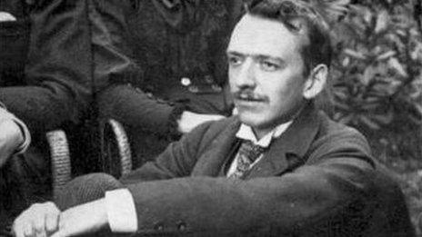
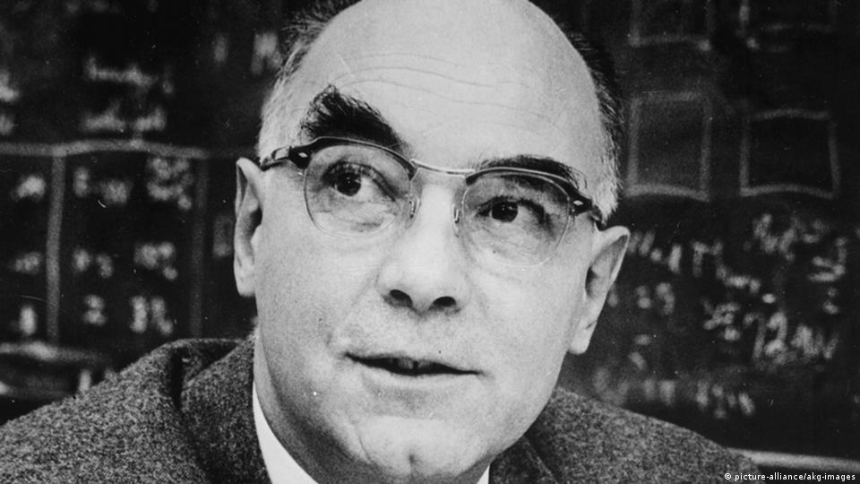

Curiosidades
Originalmente, no primeiro experimento era possível enxergar o rastro de partículas alfa, que são resultado do decaimento radioativo
Utilizando esse experimento Carl David Anderson, descobriu o pósitron, o anti-elétron em 1933
Sendo que Wilson e Carl, ambos ganharam um nobel, Wilson em 1927 e Carl em 1936
Abaixo, temos o Charles Thomson Rees Wilson e logo abaixo o Carl David Anderson

